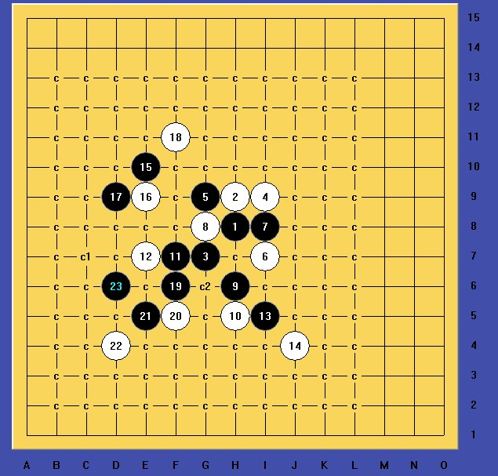
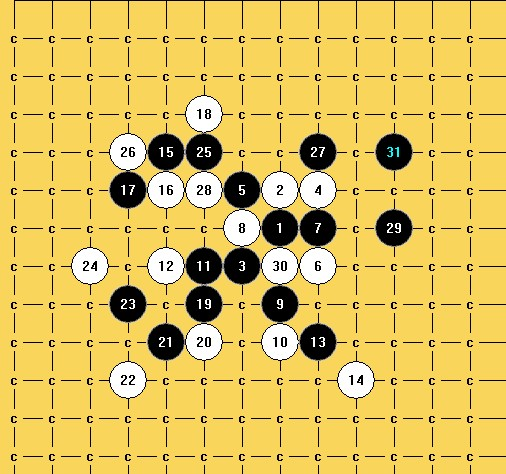

黑先VCT，难度中等！
#1 黑先VCT，难度中等！作者：逆刃 发表时间：2012-3-22 23:29:10
黑先VCT，难度中等！
［ 虎哥 于 2012-3-23 9:57:32 时花20金币送鲜花一朵］
#2 Re:黑先VCT，难度中等！作者：秋叶散人 发表时间：2012-3-23 10:21:54
23和25是做杀关键
［ 逆刃 于 2012-3-23 13:23:20 时花20金币送鲜花一朵］
#3 Re:黑先VCT，难度中等！作者：自来水 发表时间：2012-3-23 10:31:10

［ 逆刃 于 2012-3-23 13:23:31 时花20金币送鲜花一朵］
#4 Re:黑先VCT，难度中等！作者：反转 发表时间：2012-3-23 10:48:32
这中级也太难了吧。。。#5 Re:黑先VCT，难度中等！作者：虎哥 发表时间：2012-3-23 11:27:00
24之后就黔驴技穷了，看了几个点都算不清楚，计算广度还是不太够啊
#6 Re:黑先VCT，难度中等！作者：逆刃 发表时间：2012-3-23 13:26:28
都厉害哈。中级难度是指软件拆棋的难度，纯人脑的话难度太大了，如果仅仅是拆棋，提示了VCT杀，可以选的线路就不多了，关键看后面的做杀能否想到。
#7 Re:黑先VCT，难度中等！作者：山城刀客 发表时间：2012-3-24 1:45:49
看到楼上的各位朋友杀法都是21活3，我拆了下，另辟蹊径，如下图：

附上小谱：
 VCT.rar
VCT.rar最强一路，如下图：

［此帖子已被 山城刀客 在 2012-3-24 1:47:54 编辑过］
［ 逆刃 于 2012-3-24 9:40:17 时花20金币送鲜花一朵］
#8 Re:黑先VCT，难度中等！作者：虚无 发表时间：2012-3-30 10:55:38
学习
［此帖子已被 虚无 在 2012-3-30 10:59:07 编辑过］
#9 Re:黑先VCT，难度中等！作者：啊呆 发表时间：2013-4-21 12:02:47
怎么回复里点不出棋盘来了......#10 Re:黑先VCT，难度中等！作者：啊呆 发表时间：2013-4-21 12:41:18
[iwzq]h8i9g7h9g9i7i8#11 Re:黑先VCT，难度中等！作者：啊呆 发表时间：2013-4-21 12:43:00